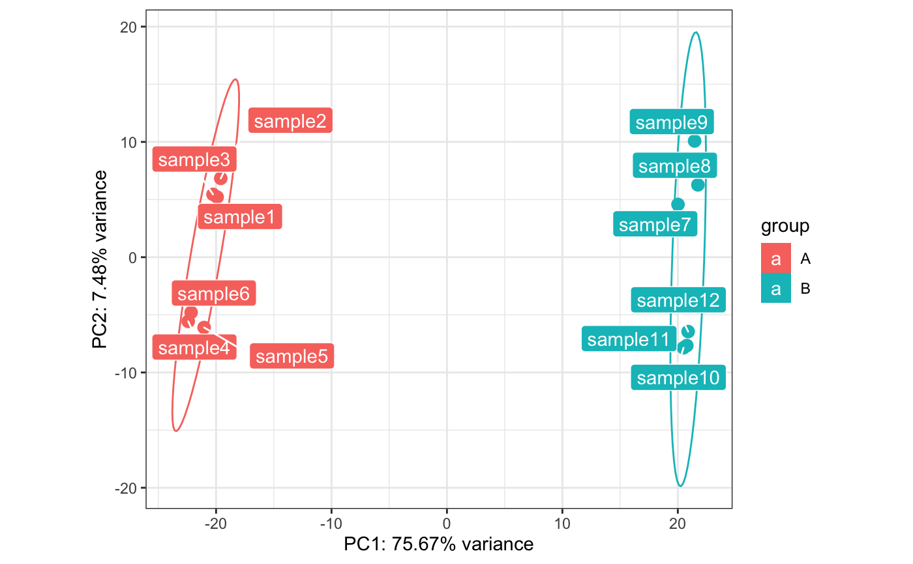

Plots the results of PCA on a 2-dimensional space
pcaplot(x, intgroup = "condition", ntop = 500, returnData = FALSE, title = NULL, pcX = 1, pcY = 2, text_labels = TRUE, point_size = 3, ellipse = TRUE, ellipse.prob = 0.95)
| x | A |
|---|---|
| intgroup | Interesting groups: a character vector of
names in |
| ntop | Number of top genes to use for principal components, selected by highest row variance |
| returnData | logical, if TRUE returns a data.frame for further use, containing the selected principal components and intgroup covariates for custom plotting |
| title | The plot title |
| pcX | The principal component to display on the x axis |
| pcY | The principal component to display on the y axis |
| text_labels | Logical, whether to display the labels with the sample identifiers |
| point_size | Integer, the size of the points for the samples |
| ellipse | Logical, whether to display the confidence ellipse for the selected groups |
| ellipse.prob | Numeric, a value in the interval [0;1) |
An object created by ggplot, which can be assigned and further customized.
dds <- makeExampleDESeqDataSet_multifac(betaSD_condition = 3,betaSD_tissue = 1) rlt <- DESeq2::rlogTransformation(dds) pcaplot(rlt, ntop=200)